IGB300 — Weeks 8-9
Week 8-9
Tasks | Hours |
|---|---|
Casino interface research | 1 |
Casino environment moodboard | 1 |
UI moodboard | 1.5 |
Juicy moodboards | 1.5 |
Expand list of achievement | 1.5 |
Week 9 Lecture | 2 |
Week 9 Foundry class | 2 |
Week 8 Foundry class | 2 |
Coin Flip juicy moodboard | 1.0 |
Dice Roll juicy moodboard | 1.0 |
Plinko drop juicy moodboard | 1.5 |
Poker deal juicy moodboard | 1.5 |
Workbook week 8-9 | 1 |
Expand idea of cosmetic (Coin achievements) | 1.5 |
Expand list of cosmetic (Plinko board achievements) | 1.5 |
Expand idea of cosmetic (Dice Achievements) | 1.0 |
Expand idea of cosmetic (Poker achievements ) | 0.5 |
Cosmetic idea research | 0.5 |
The meeting after foundry | 1 |
The meeting after foundry | 0.5 |
Check in slide | 0.5 |
Total | 27 |
Casino interface research:
This week, I researched modern gambling game interfaces, focusing on visual design and psychological mechanisms. I analysed UI features such as bright colours, animations, and feedback effects, as well as concepts like the near-miss effect and reinforcement. I also considered how these design techniques could be applied to my own game and reflected on their ethical implications.
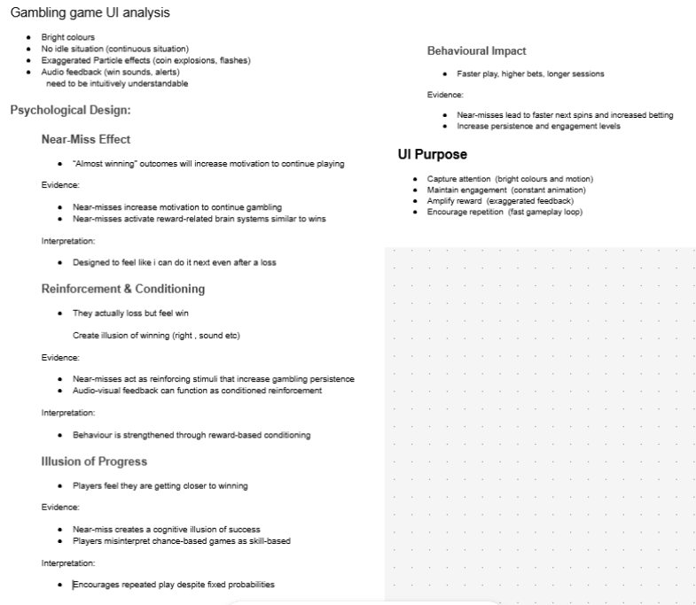
Mood board:
This week I researched gambling game UIs colour, animation, feedback, near-miss effects, and reinforcement, considered how to apply these techniques in my own game, and reflected on their ethical implications.
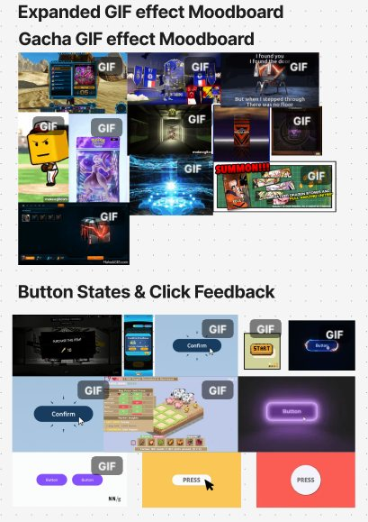
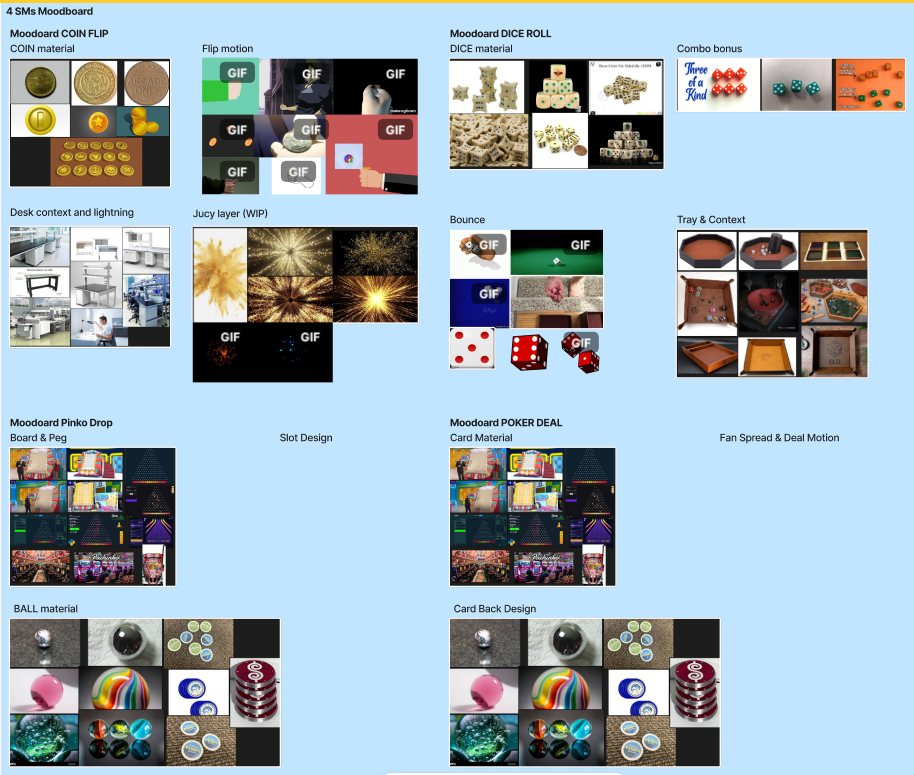
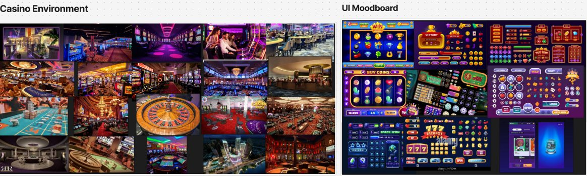
Expand list of achievement:
I created a basic idea.Then we'll use James's idea, which expands on that idea, to create the cosmetics.
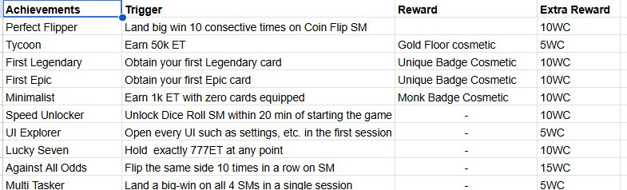
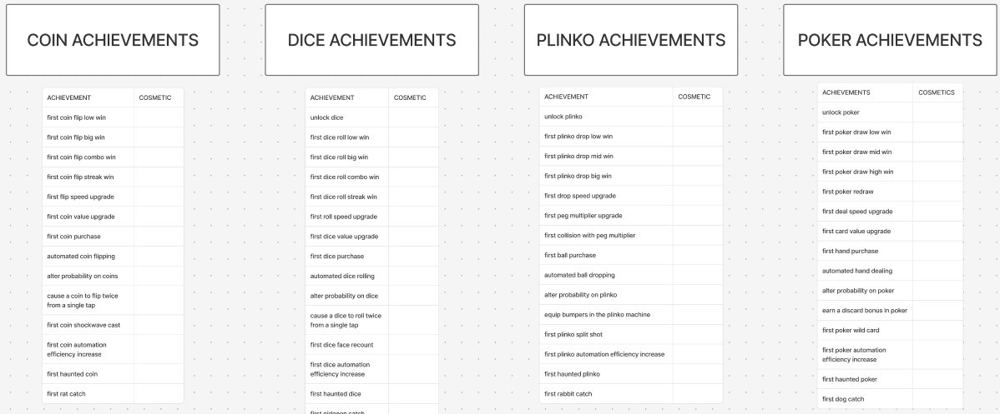
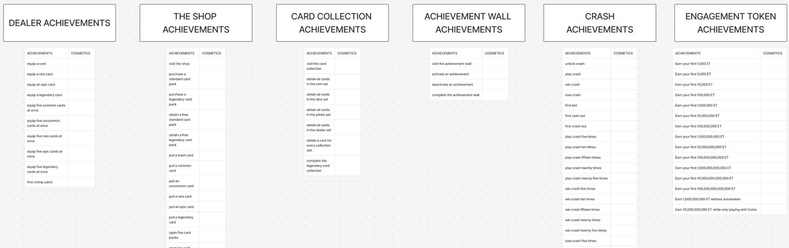
Expand idea of cosmetic:
This week, I designed a decorative reward system for all four surprise mechanics, based on the decorative categories defined in GDD and Design. Regarding decorative elements, they must not affect gameplay and must be consistently applied to all surprise mechanics. The decorative motifs are inspired by the stories of the test subjects to enhance the game's world and support Tina's player persona. And i also receive some feedback from james whether my ideas are along with this game or not
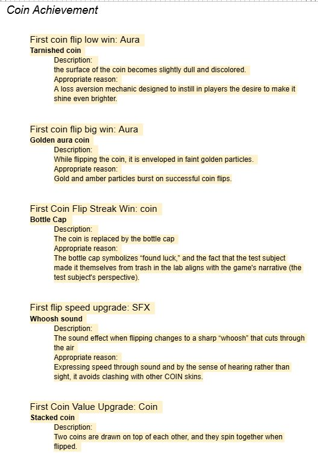
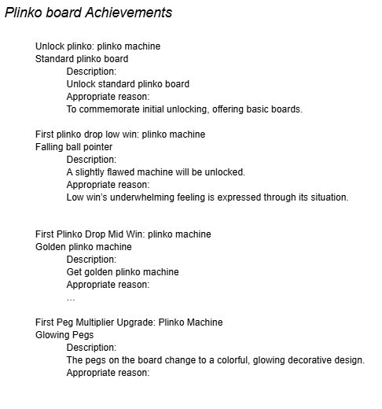
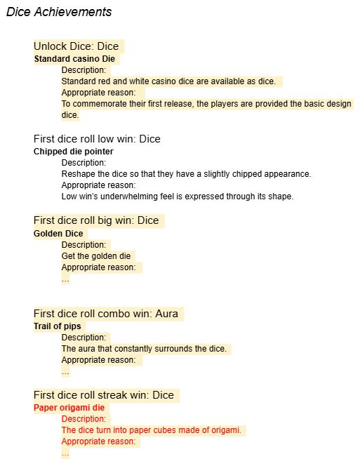
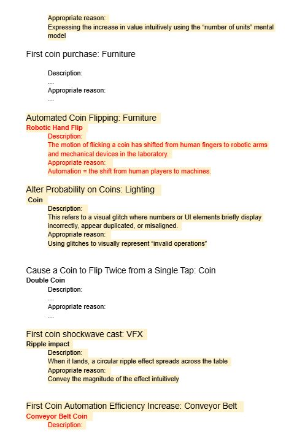
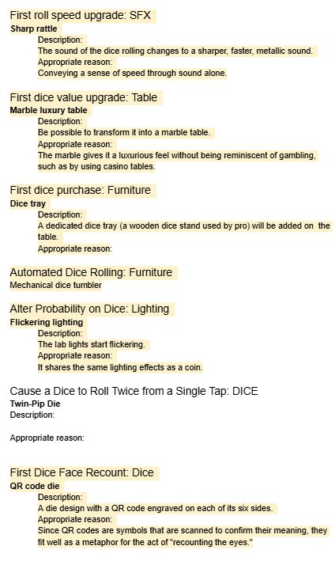
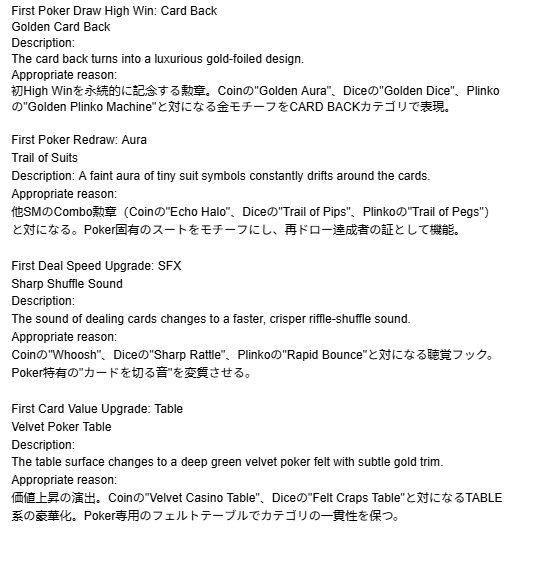
Foundry Workshop 3:
From a foundry perspective, I received a lecture on the size of the market and essential aspects of marketing.
Foundry Workshop 4:
I received a lecture on marketing from a foundry perspective. I also received a lecture on how to give effective presentations.
Team meeting regarding UI and flow:
At this meeting, I was assigned to the cosmetics department. There will be a total of 150 cosmetics, and we plan to create unique cosmetics for each of them
Check-in
I struggled to explain the task I had done in the last sprint, confusing the listener, but then went on to explain the task in detail.
IGB300 — Weeks 10-11
Week 10-11
Tasks | Hours |
|---|---|
Week 10 Lecture | 2 |
Week 11 Lecture | 1.5 |
Week 10 Foundry class | 1.5 |
Week 11 meeting | 1.5 |
Expand idea of cosmetic (Poker achievements ) | 0.5 |
Expand idea of cosmetic (Dealer achievement ) | 0.5 |
Expand idea of cosmetic (The shop achievement ) | 1.5 |
Expand idea of cosmetic (Card collection achievement ) | 0.5 |
Expand idea of cosmetic (Achievement wall achievement ) | 1 |
Expand idea of cosmetic (Cash achievement ) | 2 |
Expand idea of cosmetic (Engagement token achievement ) | 1.5 |
Research free asset for cosmetic | 2 |
Polish cosmetic idea document | 2 |
Cosmetic idea research | 2.5 |
Workbook week 10-11 | 2 |
Check in slide | 1 |
Total | 23.5 |
Expand idea of cosmetic (Dealer achievement ) 0.5h
Since I had been working on this from the last sprint, I only worked on this for 30 mins. Dealer’s cosmetics were designed around two styles. Card back and Aura. both use a consistent color scheme of white> green> purple > gold to make them intuitively understandable.
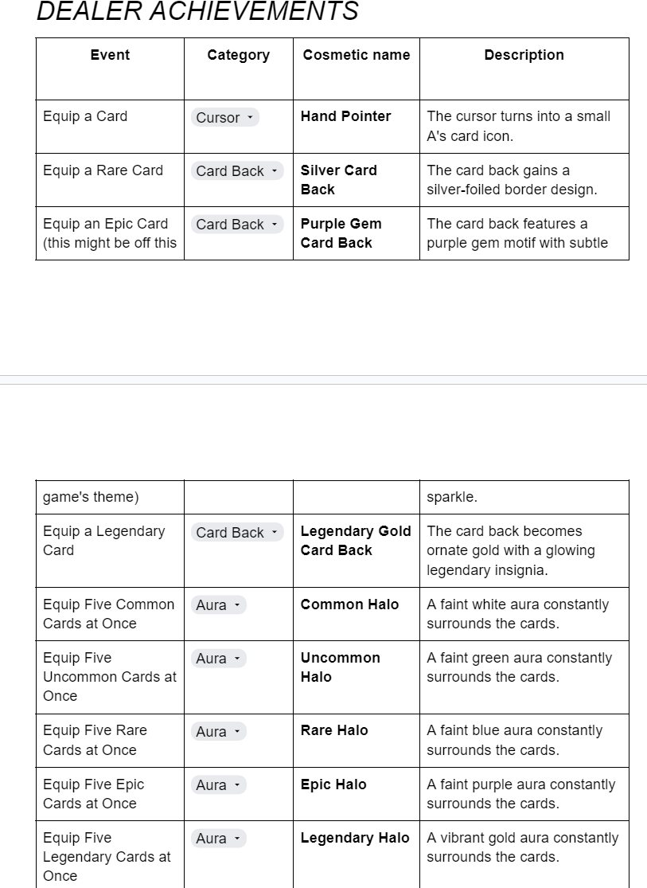
Expand idea of cosmetic (The shop achievement ) 0.5h
The Shop achievements were designed around three : Purchase Moment Cursor/VFX/SFX, Card Back. The latter is structured to make the player's lab more elaborate intuitively as they engage with the game longer.
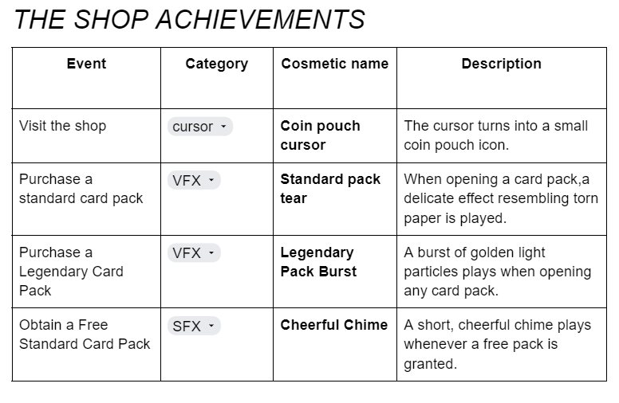
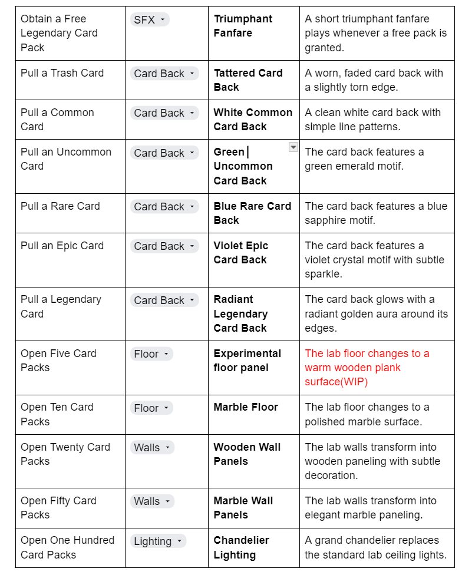
Expand idea of cosmetic (Card collection achievement ) 1.5h
To complete each SM's card set, a Platinum-grade skin is assigned, creating a three-tiered hierarchy: Standard> Golden> Platinum. Auras are used to represent mastery across all SMs, signifying a sense of accomplishment.
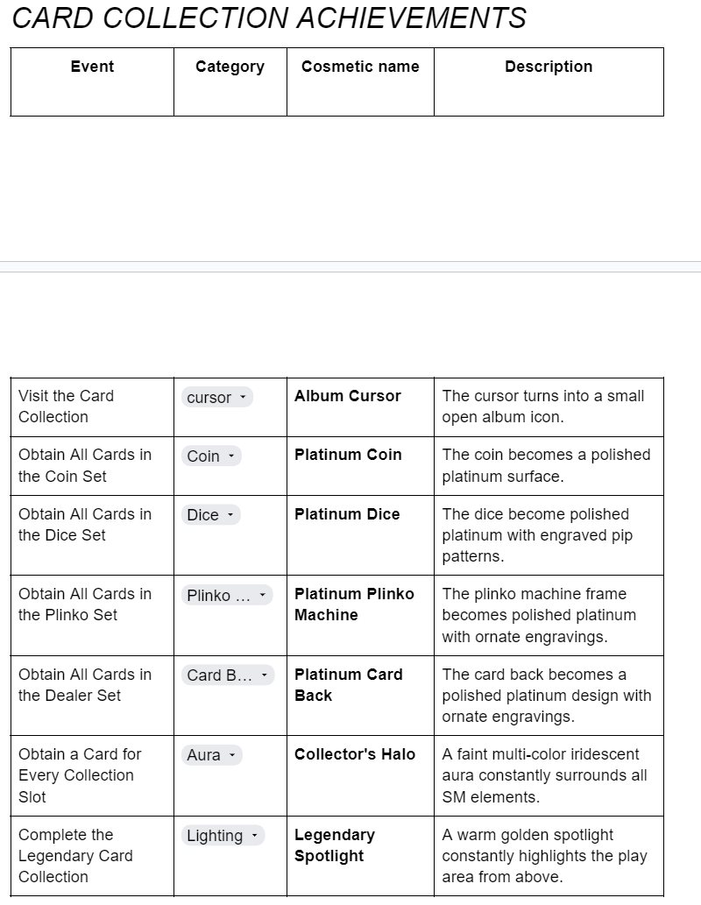
Expand idea of cosmetic (Achievement wall achievement ) 0.5h
As the Achievement Wall is an out of SM achievement, its cosmetics focus on menu-related UI elements.
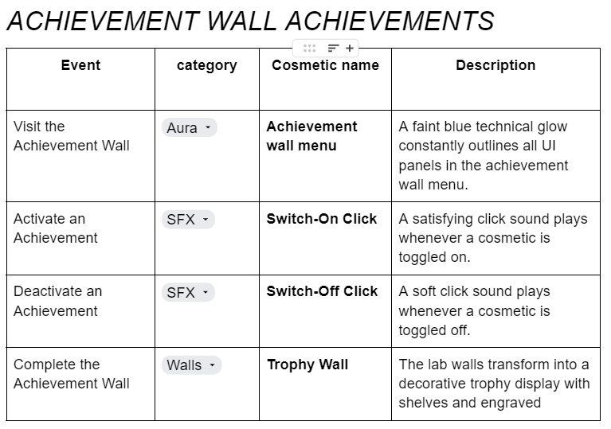
Expand idea of cosmetic (Cash achievement ) 1h
Crash achievement has three outcomes: Play, Win, and Lose. Play is assigned a Bronze to Diamond Card Back, Win is assigned a green Aura, and Lose is assigned a red/flame Aura, so even losing players can receive collectible rewards.
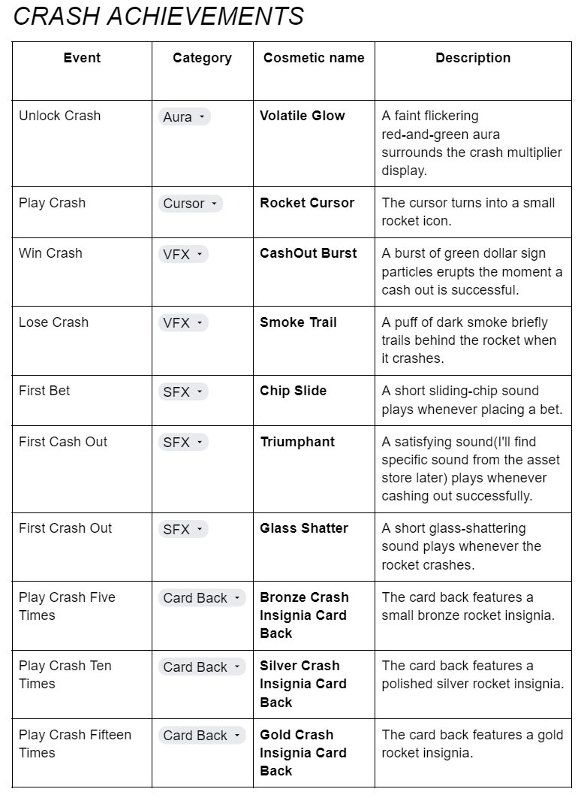
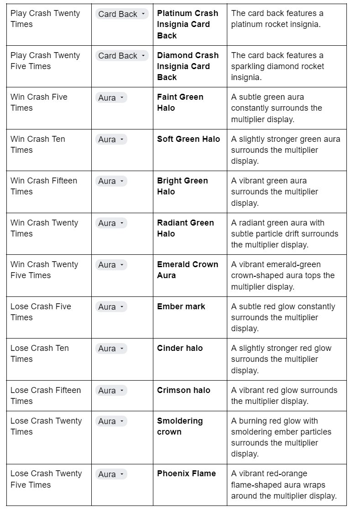
Expand idea of cosmetic (Engagement token achievement ) 2h
I've divided ET's 14 milestones into three layers: the sensory feedback layer (1k to 10k), the environmental change layer (100k to 100 trillion), and the special conditions layer (for coins only)
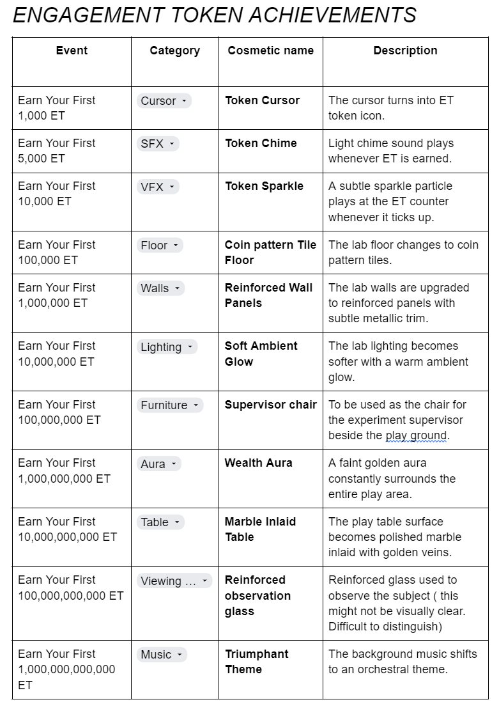
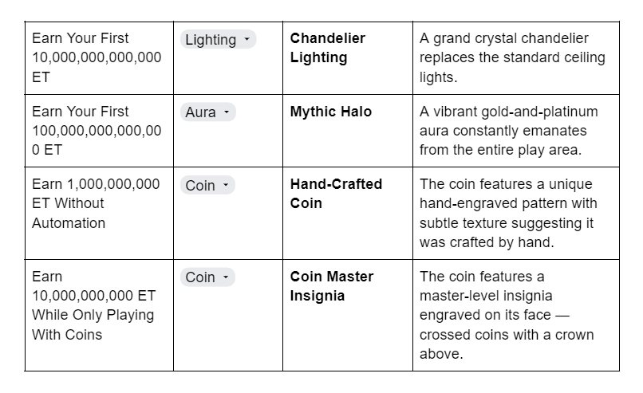
Week 10 Foundry Workshop
This was the final foundry workshop. We received a comprehensive lecture from a foundry perspective.
Team meeting
Regarding cosmetics, there were too many cosmetics around 150 to implement in practice, so we decided to implement only 10 for now.
Check-in
During this check in, o received feedback that bringing 150 cosmetic items would be unrealistic.